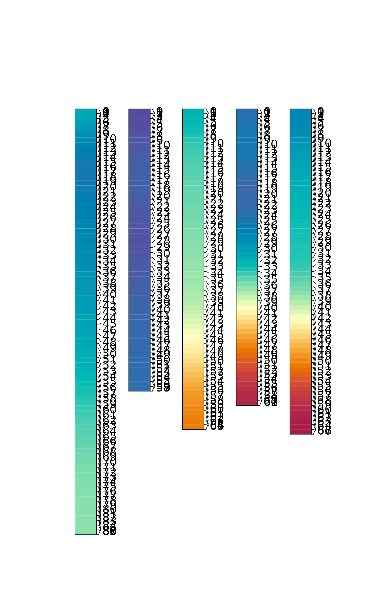

mpspline2::mpspline()R/spc2mpspline.R
spc2mpspline-SoilProfileCollection-method.RdGenerate mass-preserving splines for any numeric attribute in a SoilProfileCollection using mpspline2::mpspline(). mpspline2 implements the method described in Bishop et al. (1999). Currently this function only works with a single var_name at a time.
# S4 method for SoilProfileCollection
spc2mpspline(
object,
var_name = NULL,
method = c("est_1cm", "est_icm", "est_dcm"),
pattern = "R|Cr|Cd|qm",
hzdesgn = NULL,
...
)A SoilProfileCollection
Column name in @horizons slot of object containing numeric values to spline
Options include "est_1cm" (default; 1cm estimates), "est_icm" (estimates over original layer boundaries), "est_dcm" (estimates over constant interval, specified with d argument to mpspline3::mpspline()). Default value for d is c(0, 5, 15, 30, 60, 100, 200).
Regex pattern to match for bottom of profile (passed to minDepthOf()) default: "R|Cr|Cd|qm"; only used if hzdesgn is specified
Column name in @horizons slot of object containing horizon designations default: NULL
Additional arguments to mpspline2::mpspline()
A SoilProfileCollection with 1cm slices. Spline variables are in columns prefixed with "spline_" and RMSE/RMSE_IQR are in columns prefixed with "rmse_". If any profiles were removed from the collection, their profile IDs are stored in attr(result, 'removed').
This function now relies on the missing data checks provided by the mpspline2 package. See attr(..., 'removed') to see whole profiles that were removed from the set. Horizons containing NA in the property of interest are dropped with a message.
Data completeness is assessed and the input SoilProfileCollection is filtered and truncated to create a container for the results from mpspline2::mpspline().
Bishop, T.F.A., McBratney, A.B., Laslett, G.M. (1999) Modelling soil attribute depth functions with equal-area quadratic smoothing splines. Geoderma 91(1–2), pp. 27-45. doi:10.1016/S0016-7061(99)00003-8
O'Brien, Lauren (2022). mpspline2: Mass-Preserving Spline Functions for Soil Data. R package version 0.1.6. https://cran.r-project.org/package=mpspline2
if (requireNamespace("mpspline2")) {
data(sp1)
depths(sp1) <- id ~ top + bottom
res <- spc2mpspline(sp1, "prop")
plotSPC(res[1:5,], color = "prop_spline", divide.hz = FALSE)
}
